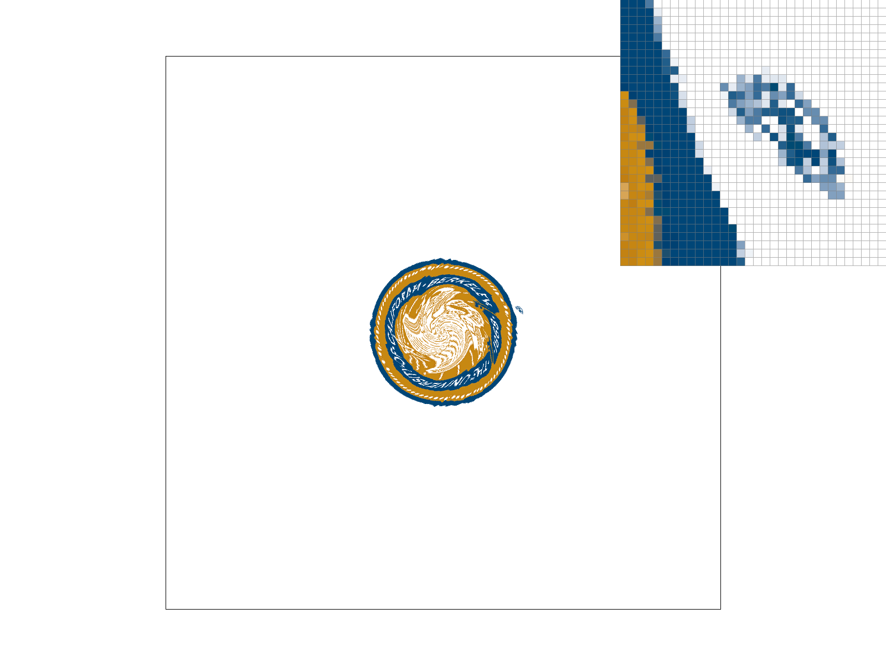

In this assignment, we created a triangle rasterizer and implemented transforms and texture-mapping. Once we built a basic triangle rasterizer, we enhanced it by utilizing antialiasing techniques including supersampling, pixel sampling, and level sampling. We used resources provided in the lectures such as pseudocode for the point in triangle test, transformation matrices, barycentric coordinates, linear interpolation, mipmap level calculation, and the trilinear filtering approach.
In this task, we began the project by rasterizing triangles with only one color. To accomplish this, we call the rasterize_triangle function in rasterizer.cpp. This takes seven arguments, which are: three sets of $(x, y)$ coordinates that represent each of the triangle's three vertices, and the color of the triangle. Color is represented by the Color class, which stores a red, green, and blue value as floats. Coordinates are also represented by floats.
The rasterize_triangle function implements the basic triangle rasterization algorithm covered in lecture:
- Of the three given $(x, y)$ vertices of the triangle, find the maximum and minimum $x$ and $y$ values. The bounding box of the triangle is given by $(x_{min}, y_{min})$ and $(x_{max}, y_{max})$.
- For all points within the min and max x and y (inclusive), perform three point-in-triangle tests, one for each line segment of the triangle boundary. Perform these tests on $(x+0.5, y+0.5)$ to check the center of the pixel; valid pixels should be filled as $(x, y)$. Check both clockwise and counterclockwise orderings of the vertices to eliminate errors with winding order (so six total point-in-triangle tests are performed per $(x, y)$ in the bounding box).
- For each $(x, y)$ tested: $((-(x - p_{0x}) * (p_{1y} - p_{0y})) + ((y - p_{0y}) * (p_{1x} - p_{0x})))$
- $p_0$ and $p_1$ correspond to the ends of the line segments being tested
- If all results are $>0$, the point is within the triangle
- If all results are $=0$, the point is on the triangle boundary
- If any of the results are $< 0$, the point is outside the triangle
- If the point tested is within the triangle (or on the boundary; we consider these inside the triangle arbitrarily), fill the pixel corresponding to said point the specified color.
We encountered an issue whereby only checking three point-in-line tests (i.e. a clockwise winding order) led to some geometries not being filled correctly. The above solution of checking the negation of each point-in-line test (or checking six point-in-line tests) fixed this issue. An additional issue was that sometimes borders of triangles would not render in but the majority of the triangle would. We solved this by offsetting the sampling location from the pixel location by $(0.5, 0.5)$ and assuming that all pixels on a triangle line segment boundary belong to said triangle.
As an optimization, we realized that we can negate each result of the clockwise point-in-triangle tests instead of running duplicate point-in-triangle tests for the counterclockwise ordering. This means we can optimize down from six point-in-triangle tests per $(x, y)$ coordinate in the bounding box to only three.
The algorithm described above searches through every pixel coordinate in the bounding box of each triangle parsed. This is the algorithm described by the project specifications and as such is not worse than one that "checks each sample within the bounding box of the triangle".
Figure 1: basic/test4.svg with default rendering settings
Supersampling is a process by which we rasterize at a higher resolution than the native output resolution, then downscale by averaging to get the native output resolution. This process results in more pixels being drawn to the sample buffer and requires a larger sample buffer, meaning supersampling requires more memory and computation. This increase in resource usage is generally proportional to the supersampling rate, here an instance variable called sample_rate. For example, with a sample rate of four the sample buffer will be four times as large and four times as many pixels will be filled in (given the same shape). In screen coordinates, this would be going from (for example) 1000x1000 to 4000x4000.
When each triangle is drawn into the sample buffer, it occupies a number of pixels proportional to the sample rate. To scale from this larger sample buffer to the native output resolution, we average down groups of pixels in the larger sample buffer. An easy way to do this is to scale down in groups of sqrt(sample_rate) * sqrt(sample_rate). Therefore, we can think of each square of sample_rate pixels on the larger sample buffer as one pixel on the target buffer.
The effect that averaging down has is that it reduces aliasing on the image (anti-aliasing). Aliasing in this context would be "jaggies", or jagged edges where continuous lines cannot be perfectly sampled into a discrete space like the pixels of a screen. The reason supersampling has an antialiasing effect is that it allows for a gradient of colors along the boundary of a triangle, whereas a set-color (even multi-color) triangle rasterizer will draw only predetermined colors. A supersampled image will have smoother edges and overall appear blurrier.
To rasterize a triangle with supersampling, we perform three main steps: scale buffers, scale coordinates, and average down to target.
Scaling buffers is primarily a setup step, which involves resizing the RasterizerImp instance variable sample_buffer (a vector of all sample locations) to size (width * height * sample_rate). We choose this value because the sample_buffer must hold enough Colors for each pixel on the screen. Without supersampling, this means (width * height). With supersampling, we scale each pixel by sqrt(sample_rate). Thus, if both the width and height are scaled (multiplied) by sqrt(sample_rate), the sample_buffer must hold (width * sqrt(sample_rate) * height * sqrt(sample_rate)) total pixels, which simplifies to (width * height * sample_rate). Each element of the sample_buffer vector is a Color class, so we do not need to scale by number of colors. This resizing occurs within both set_sample_rate and set_framebuffer_target.
A small optimization is to introduce a sqrt_sample_rate instance variable in addition to sample_rate. This variable is updated whenever sample_rate is updated to the value of sqrt(sample_rate). The sqrt(...) function is a computationally expensive operation, so by extracting it to an instance variable we reduce the overhead of every rasterizing function.
The second step to supersampling is to scale the coordinates of each triangle being rasterized. This is required because every triangle is originally drawn on the native output resolution plane. Instead, we want to draw these triangles scaled by a factor of sample_rate (or equivalently, each dimension is scaled by sqrt(sample_rate)). This is done very simply by multiplying each vertex coordinate by the scalar instance variable sqrt_sample_rate. Scaling is performed before any further operations. Thus, all operations will be performed on a scaled triangle and proportionally more pixels will be filled on the enlarged sample buffer.
For points and lines, we do not implement supersampling (as is specified by the specifications). Instead, points and lines are each scaled up to fill the enlarged pixels. That is, for each $(x, y)$ we fill sample_rate pixels in a square pattern of sqrt(sample_rate) by sqrt(sample_rate). This is accomplished by modifying fill_pixel to use a nested loop instead of filling a single pixel. This requires dynamically calculating an index into the one-dimensional sample_buffer (i.e translating an $(x, y)$ coordinate into an index).
Imagine we are starting at the top left of the image. The outer loop increments through the height of this supersampled pixel, which means an increment of (width * sqrt_sample_rate) until (width * sample_rate). This is derived from the screen being width pixels wide natively, and being scaled by sqrt_sample_rate. In each enlarged pixel, there are sqrt_sample_rate rows, meaning the final index is (width * sqrt_sample_rate * sqrt_sample_rate) which simplifies to (width * sample_rate). The inner loop is more straightforward; it increments by one through the width of the supersampled pixel, from zero to sqrt_sample_rate. The sample buffer is then filled with an index of (w + h), where (w) is the current loop width and (h) is the current loop height.
To incorporate the $(x, y)$ position of this pixel, we scale the x value by sqrt_sample_rate (=sx) and the y value by width * sample_rate (=sy). Thus, the index into the sample buffer becomes (w + h + sx + sy).
While debugging this step, we encountered an issue where lines would appear thinner as the sample rate increased. We discovered that this was due to the lack of filling in all sample positions for a given pixel. For example, if we fill in pixel $(x, y)$ and have a sample rate of four, then we have only filled in one of the four sample locations. When averaged with the three remaining white pixels, this brightens the overall pixel and appears thinner. We fixed this by filling all sample locations for a given pixel, instead of just one (as described above).
The last step in supersampling a triangle is to average each enlarged pixel. The same algorithm is reused from fill_pixel to iterate through each Color of the enlarged pixel. To average, we simply create a placeholder color and add all of the Color values contained within the enlarged pixel to this placeholder color. The placeholder color may become invalid (i.e. values greater than 1), but will become valid again when divided by the sample_rate (to take the average of sample_rate) pixels. This color value is returned from average_pixel. resolve_to_framebuffer is modified to take this averaged color value instead of the value of the sample buffer at the computed $(x, y)$ location.
Finally, once all the pixels are averaged, the color values are written into the frame buffer. We had an indexing issue that caused the image to be duplicated. This was solved by using the indices of each pixel rather than the sample location.
The images below show the results of supersampling on basic/test4.svg. We observed a blurring effect as sample rate increases because we draw increasingly large pixels onto the sample buffer. When averaged down, the white pixels make up a smaller portion of the average and as such the image goes from white/sharp to blurry/red. sample_rate from left to right: 1 (supersampling disabled), 4, 16
|
Figure 2: basic/test4.svg with sample_rate=1 |
Figure 3: basic/test4.svg with sample_rate=4 |
Figure 4: basic/test4.svg with sample_rate=16 |
In this task, we implemented three types of matrix transforms: translation, scaling, and rotation. These transformations were implemented as modifications to functions in transforms.cpp, wherein Matrix3x3 objects are created and returned. Each transformation is in 2D space and uses homogeneous coordinates.
One item we noted during implementation was that the rotation is supplied in degrees, however the standard library sin/cos functions take angle arguments in radians. The standard library radians(deg) helps with this issue.
my_robot (Mondrian fashion robot) is a model posing with their hand on their hip wearing an outfit inspired by the paintings of Piet Mondrian. To create this pose, we translated and rotated sections of the robot's right arm to place their hand on their hip with their shoulder slightly raised. We translated and rotated the left arm to lay at its side with its shoulder more relaxed. The colors were changed to clothe the robot in a striking outfit.
Figure 5: my_robot with custom transformations
Barycentric coordinates (alpha $\alpha$, beta $\beta$, gamma $\gamma$) are a coordinate system centered around the three vertices of a triangle. For each point $(x, y)$ in a triangle, alpha, beta, and gamma are all non-negative and sum to 1. Alpha, beta, and gamma are essentially weights that indicate how close a point is to each of the triangle's vertices A, B, C, respectively; the greater the weight (closer to 1), the closer the coordinate to the corresponding vertex.
Barycentric coordinates can be used for two main purposes. The first is in place of the point-in-triangle test. Instead of calculating these three tests, we can check if each of alpha, beta, and gamma are greater than zero for any given $(x, y)$ in a bounding box. Without further uses, this is probably less efficient than simply using the point-in-triangle test. However, barycentric coordinates can also be used to interpolate between values.
The process outlined above works in theory, however there are certain practical limitations to an implementation of this. An issue we encountered was with floating point precision and rounding, where floating point numbers sometimes could not represent lines with enough precision. Therefore, although we in theory should be checking that all of alpha, beta, and gamma are greater than zero, instead we check if they are greater than or equal to some epsilon $\epsilon$ (error) value. From our empirical testing, this value was $\epsilon=-1e-6$
As mentioned before, alpha, beta, and gamma can be used as weights; these are used for interpolation, which can be between any three pieces of data. For example, we can assign a Color to each corner of the triangle. Then, we can weight these colors by alpha, beta, and gamma. Since alpha, beta, and gamma are dependent on the current $(x, y)$ position being tested, this calculates an interpolated color which corresponds to that $(x, y)$. Additionally, since alpha, beta, and gamma all sum to 1, we know that all colors within the triangle will be valid (given the vertex colors are all valid).
The image below shows an example of using barycentric coordinates to interpolate between colors. The vertices are set to red, green, and blue, however none of the intermediate colors are specified. As shown, the barycentric coordinate system correctly interpolates the color purple between red and blue, orange/brown between red and green, and turquoise between green and blue.

Figure 6: Custom tricolor interpolated triangle
The image below is a rendering of test7.svg, which uses barycentric color interpolation to create a circle out of many triangles.

Figure 7: basic/test7.svg with default rendering settings
Pixel sampling is the process by which textures are applied to a rasterized shape (here a triangle). This primarily involves converting each screen space coordinate $(x, y)$ into a texture space coordinate $(u, v)$. The $(u, v)$ coordinates are each bounded by $[0, 1]$ and correspond to a position on the texture map. A texture map is typically just a flat image from which texture colors are “picked" (sampled) per pixel. The mapping of $(x, y)$ to $(u, v)$ coordinates is typically specified per vertex, and then just as in the previous section we use barycentric coordinates to interpolate between these vertices for all other points within the triangle.
The only change from Task 4 is that instead of weighting a Color object, we will now weight our $(u, v)$ coordinates (represented by a Vector2D). This means, however, that some method is required to convert from the $(u, v)$ coordinates to a Color object. The main limitation of these processes is that there are a certain number of pixels on the texture map, but $(u, v)$ coordinates are continuous and thus have fractional pixels. There are multiple different ways to determine which pixel to use given a fractional $(u, v)$, and which one you pick is determined by the pixel sampling method (psm). If psm == P_NEAREST, we use nearest neighbor pixel sampling. If psm == P_LINEAR, we use bilinear sampling.
As a note, a prerequisite to doing either is that the $(u, v)$ coordinates must be scaled up by the width and height (respectively) of something called the mipmap. The mipmap is a way of storing texture maps in multiple resolutions all within one compact image. We are using the highest resolution mipmap level (0) which has some width (mip.width) and height (mip.height). The next section explores this topic further and explains what a mipmap level is.
Nearest neighbor is just a fancy way of saying “closest point". Our implementation simply rounds the scaled $(u, v)$ coordinates to their nearest values each. This isn’t truly “nearest" (as that would mean we calculate the distance to each bounding corner) but it is much faster. It only involves two round operations instead of various arithmetic, two ceil, and two floor operations. These rounded coordinates become the texture coordinates (to index into the mipmap texture with), which are converted into a Color by the prebuilt function get_texel. These operations are contained within the Texture instance function sample_nearest.
As a note, both u and v have to be bound to the range $[0, 1]$ manually. Our implementation chooses to have the helper function return a magenta color (i.e. $(1, 0, 1)$) if either u or v is out of range. There is also a small error with the boundary case of $u$ or $v$ == 1, wherein the index will be off by one (if we scale by width, and the size of the backing array is width, then the last index is width-1 but if u or v == 1 then we could be indexing into width; which is out of bounds).
Bilinear sampling instead involves linearly interpolating between the colors of the bounding box around the $(u, v)$ coordinate. Linear interpolating (or lerp for short) is performed by evaluating: $v0 + (x * (v1 - v0))$. This works for any set of vectors, including Colors since they can be thought of as three-dimensional vectors.
To perform this bilinear sampling:
- Check the bounds of the $(u, v)$ coordinates to ensure they are within $[0, 1]$.
- Scale the $(u, v)$ by the mipmap width and height respectively to get texture coordinates.
- Take the floor of each $(t_x, t_y)$ (instead of rounding). These become $x_0$ and $y_0$.
- Add one to each value to make x1 and y1 (checking again for out-of-bounds errors). This makes a bounding box around the texture coordinate.
- Get the color at each of the four corners of the bounding box: i.e. $c_{01} = texel(x_0, y_1)$
- Linearly interpolate between $c_{00}$ and $c_{10}$ ($=c_0$), then separately $c_{01}$ and $c_{11}$ ($=c_1$)
- Both will use an $x=t_x-x_0$, or the $[0, 1]$ value corresponding to how close in the $x$ direction the texture coordinate is to the minimum coordinate of the bounding box
- Linearly interpolate between $c_0$ and $c_1$, with $y=t_y-y_0$ (same process as with $x$ before)
Most of the problems from this task stemmed from out of bounds errors. Some ways to fix these where they emerge ($t_x$, $t_y$, etc) are listed in the steps above.
In general, the bilinear sampling will look “better" than the nearest neighbor sampling. This is because bilinear will create a smooth transition between texture pixels whereas nearest neighbor will simply pick one texture color or another. This can sometimes lead to sharp edges i.e. aliasing. This is at the expense of performance. Linearly interpolating three times for each pixel and getting the color of four pixels is significantly more expensive computationally than the naive approach of nearest neighbor which has just two round operations.
|
Figure 8: texmap/test5.svg with sample_rate=1 and nearest neighbor sampling |

Figure 9: texmap/test5.svg with sample_rate=1 and bilinear sampling |
|
|
Figure 10: texmap/test5.svg with sample_rate=16 and nearest neighbor sampling |
Figure 11: texmap/test5.svg with sample_rate=16 and bilinear sampling |
The images above show “four png screenshots using nearest sampling at 1 [and 16] sample[s] per pixel, [and] bilinear sampling at 1 [and 16] sample[s] per pixel". In this case, none of the images look significantly “better" or “worse". The supersampling in both cases leads to the supersampled images looking smoother but also blurrier (i.e less aliasing). By contrast, the non-supersampled images look sharp and jagged (i.e. aliased). There is not a massive difference between the two techniques, though in a blind test the bilinear sampling was identified to have more blended colors along edges. Similarly, the effect was more noticeable when supersampled due to the texture edges being a more prominent feature.
Level sampling is the process by which we select a mipmap level. A mipmap level, as alluded to in the previous section, is a texture map of a certain size. For example, a mipmap might hold 4 levels from 0 to 3. Level 0 is the largest level, which for example could be 1024x1024. Each successive increase in level reduces each dimension by a factor of 2. Level 1 would then be 512x512.
The reason we have multiple levels is that always using level 0 is computationally expensive. For triangles that might be in the distance or otherwise not require a lot of detail, we do not need to render them in full image quality. This may also lead to these smaller / further away triangles to look “better" (i.e. have less aliasing) when drawn onto the target frame buffer. The opposite effect occurs for objects close to the camera/drawn plane. In simpler terms, a higher mipmap level makes textures in the background look better (less aliased) at the expense of textures in the background, which look blurrier/worse. As such, we can get away with using a smaller version of the same texture map (i.e. a higher mipmap level). The tradeoff made is that storing multiple versions of the same texture requires more disk space (to store the mipmap file) and more memory space (to keep all the textures readily available). That being said, there are layouts that guarantee a mipmap will not take more than 4/3 the amount of a single level.
To implement level sampling, we first vectorized our $(u, v)$ coordinates into Vector2D objects. We also extracted barycentric coordinate calculation to a helper function. This is done as we now need to calculate the barycentric coordinates for $(x+1, y)$ and $(x, y+1)$ in addition to $(x, y)$. We then weight each of these barycentric coordinates against the $(u, v)$ coordinates of each vertex of the triangle. These $(u, v)$ coordinates are used to calculate the mipmap level, which is calculated from:
$$L=max(\sqrt{(\frac{du}{dx})^2+(\frac{dv}{dx})^2}, \sqrt{(\frac{du}{dy})^2+(\frac{dv}{dy})^2}$$We then can discretize this expression as follows:
$$L=max(\sqrt{(\frac{\Delta u}{\Delta x})^2+(\frac{\Delta v}{\Delta x})^2}, \sqrt{(\frac{\Delta u}{\Delta y})^2+(\frac{\Delta v}{\Delta y})^2}$$Given the $\Delta x=\Delta y=1$, we can treat the $(u, v)$ coordinates derived from weighting $(x+1, y)$ and $(x, y+1)$ as these values directly. To calculate the mipmap level:
- Load the resulting $(u, v)$ coordinates into sp.p_dx_uv and sp.p_dy_uv (using a local SampleParams variable named sp).
- The original $(u, v)$ corresponding to $(x, y)$ is loaded into sp.p_uv.
- In texture.cpp#get_level, these are used to calculate a dx=sp.p_dx_uv - sp.p_uv and dy = sp.p_dy_uv - sp.p_uv.
- Calculate $sqrt(dx^2+dy^2)$. This is the mipmap level, which should be a float.
This level value is then used in texture.cpp#sample:
- If sp.lsm != L_ZERO, then level = log2(get_level(sp)). Otherwise level=0.
- This level is then clamped to the available level sizes in the mipmap to prevent out-of-bounds errors.
- If we are using L_NEAREST or L_ZERO for the level sampling method, we round to the nearest level and pass this to sample_nearest or sample_bilinear to get the texture color. The implementation for these functions is explored in task 5.
- If we are using L_LINEAR as the sampling method, we instead take the floor of the level and get corresponding color using the appropriate pixel sampling method. However, we additionally get color corresponding to floor(level)+1.
- Linearly interpolate between the colors for floor(level) and floor(level)+1, using the distance of (level - floor(level)). In effect, we are linearly interpolating between the colors provided by the levels that bound the float level value.
The color value is then returned to rasterizer.cpp#rasterize_textured_triangle, where it is drawn to the sample buffer. Supersampling is performed by scaling the original triangle vertex coordinates as it was in task 2. No special modifications are required here.
All helper functions (calculate_barycentric, uv_from_bary, and lerp_color) are made inline as a small optimization to avoid transferring each triangle vertex across registers for proper function calls.
Most issues in this task were a result of not knowing what the intended result was supposed to look like. We had some changes which looked good but even with TA assistance they were not able to ascertain if our algorithm had been implemented correctly.
In testing, the best antialiasing technique was supersampling (increasing the number of samples per pixel). The smoothing properties across the image (regardless of depth or triangle size) improved the image quality the greatest amount. However, this technique was also the most computationally expensive as it required additional memory and processing proportional to this sample rate.
Pixel sampling had a much smaller effect on the overall image quality, though that doesn’t mean it was an ineffective antialiasing technique. When changing from nearest neighbor to bilinear pixel sampling, there is a notable difference, especially around the edges of textures and drawn shapes. The edges become smoother and less aliased. This is an effect discussed in more detail in task 5. To reiterate, this increased quality comes at the expense of additional computation; instead of two round operations we must linearly interpolate three times, get four colors, and perform various arithmetic processing steps.
Level sampling did not universally increase or decrease the image quality. Instead, it selectively increased or decreased quality for certain triangles. Unlike the lecture provided examples, this was not observed through triangles “closer" or “further" from the camera plane, but instead through larger or smaller triangles. A good example of this is the world map, which has certain areas enlarged and others shrunk. The quality of the enlarged triangles decreases with nearest neighbor level sampling, and decreases further with bilinear level sampling. This is because with level zero we are always using the best resolution texture for all areas. In areas where triangles have been shrunk, this leads to oversampling and harsh aliasing. In areas where the triangles have been enlarged, this leads to nice looking textures with clean edges but minimal aliasing. By selecting another sampling technique, we use different maps for different areas. The best map we can use for the foreground is level zero, but both level sampling techniques will pick that or a higher level; in essence it is likely to use level zero.
Put together, pixel sampling and level sampling results in a tradeoff between total image quality, depth/size selective image quality, and computational resources. With better image quality or better depth/size selective image quality comes an increase in memory and processing power. This additional antialiasing does compound, though not to the same magnitude as the need for computational resources, which are directly multiplicative. As a personal preference, if we ignore supersampling then the best combination of level sampling and pixel sampling is bilinear pixel sampling and nearest neighbor level sampling. Bilinear pixel sampling increases texture mapping accuracy, while nearest neighbor level sampling enhances fine details.
|
Figure 12: Custom texture with lsm=L_ZERO and psm=P_NEAREST |
Figure 13: Custom texture with lsm=L_ZERO and psm=P_LINEAR |
|
|
Figure 14: Custom texture with lsm=L_NEAREST and psm=P_NEAREST |
Figure 15: Custom texture with lsm=L_NEAREST and psm=P_LINEAR |
The use of triangles to create more complex forms in computer graphics has a physical counterpart in the art of origami, in which a simple rectangular piece of paper can be transformed into intricate sculptures. Similar to how we created my_robot.svg in task 3, for the origami crane in competition.svg, we first planned the positions of the triangles and then placed the points and filled them with shades of red to represent light and shadows. For each component of the origami crane, transforms (rotation, scaling, and translation) were applied when necessary to draw the triangles in the correct position.
Figure 16: Red origami crane made by rasterizing triangles